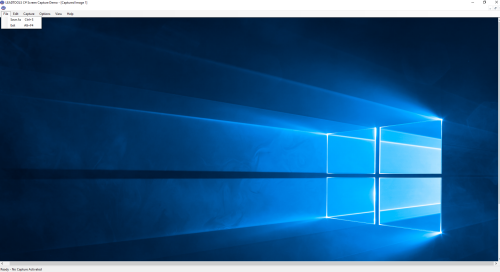

Screen Capture Demo
Demonstrates Screen Capture functionality.
Capture active window/client area
Capture user-defined area of the screen
Capture menu under cursor
Capture resources from existing EXE/DLL
Capture full screen
Capture desktop wallpaper
